Me Experience as a bot in Microsoft Teams using Bot Composer¶
Published on 14/03/2021
If you have been following my blogs, you know that I have created an SPFx webpart which was used as a Personal app in Microsoft Teams, which gives you the Me Experience as explained in the blog by Waldek Mastykarz.
For a long time I have been thinking of giving you a bot that does something similar. While it is still a work in progress, I thought I would share with you the basics on how to get started with bots in Microsoft Teams using bot composer to build a ME bot. This time again, we are going to connect to Microsoft Graph to get data about the user.
This bot currently will get upcoming meetings of the logged in user.
Last week, I spent some time with my colleagues (Bob German and Waldek Mastykarz) for a hack week in my team. And we built a personal assistant bot which we will soon be sharing with you! Kudos to these two, we learned a lot from each other.
But first thing first, let's build a basic bot that connects to Microsoft Graph which will get you next meetings listed out for you, from your calendar.
Tools needed¶
There are some tools you need in your dev environment to get started 🛠.
- Bot Composer
- Bot Emulator
- Azure Subscription (for Bot Services, and LUIS)
- Set up ngrok
Azure Side of things 🌩¶
If you are familiar with Bot channels registration then you can skip to next section or stay with me here otherwise.
- In Azure portal htts://portal.azure.com, Search for Bot Services.
-
Create new Bot Channel Registration from the choices.

-
Fill in the bot details, make sure you have an active subscription. The messaging end point is what you will be tunneling the local project using ngrok. Add
/api/messagesto the ngrok url.
-
Once created, on the left nav, choose channels and add a featured channel for
Microsoft Teams
-
Further along, you will be asked to agree to Terms of Service, Agree and proceed.
-
In the left nav, select Configure and you will see the below window, here you will manage the appId and secret that you will use in your bot.
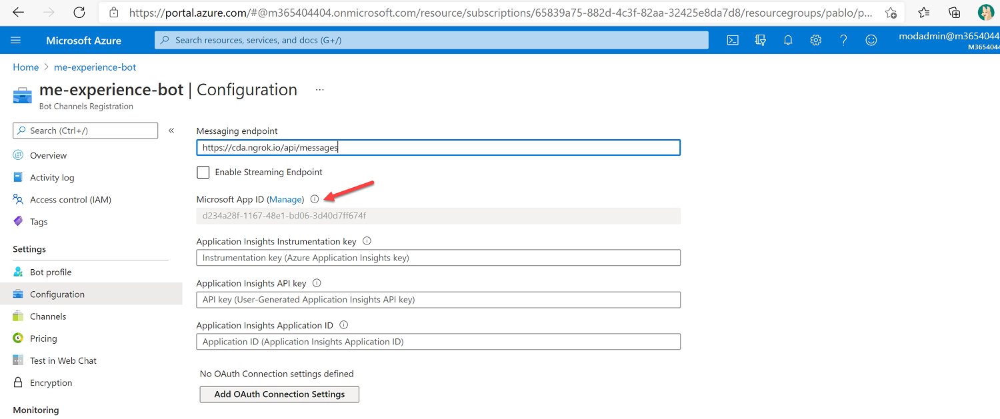
-
When you click on the Manage link shown above, you will be taken to the app that was registered as part of the
Bot channel registration. Copy the appID, Application(client)ID which is in the Overview page as shown in the below screen. Also copy the Directory(tenant)ID. Make sure here you also create a secret for this app. Copy it somewhere to use later.
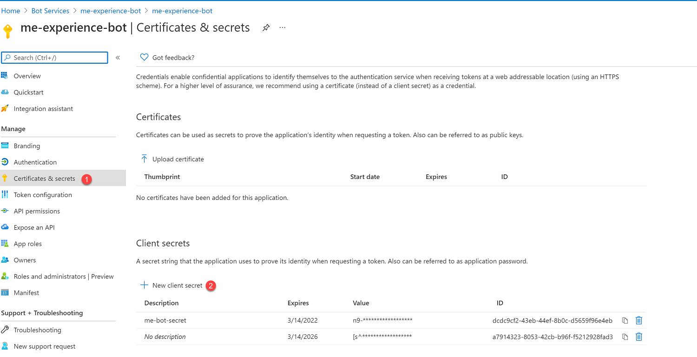
-
In the app registration's overview page click on the Add a Redirect URI link to set the redirect URI.
-
Add a Web platform, by clicking on the Add a platform link and choosing Web among the platforms as shown below.
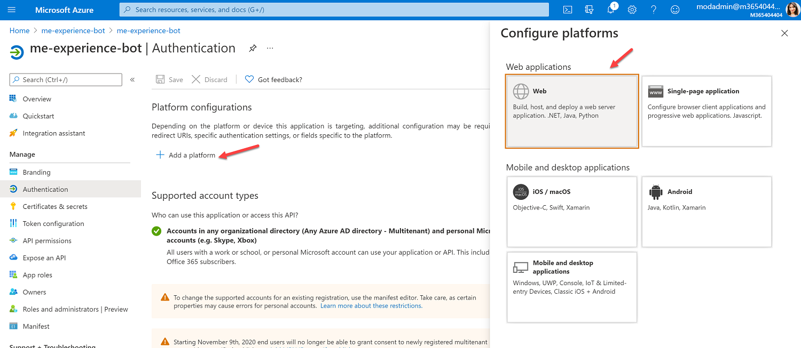
-
The redirect URL will be
https://token.botframework.com/.auth/web/redirect. Make sure you enable Implicit grand and hybrid flow by checking both Access tokens and ID tokens.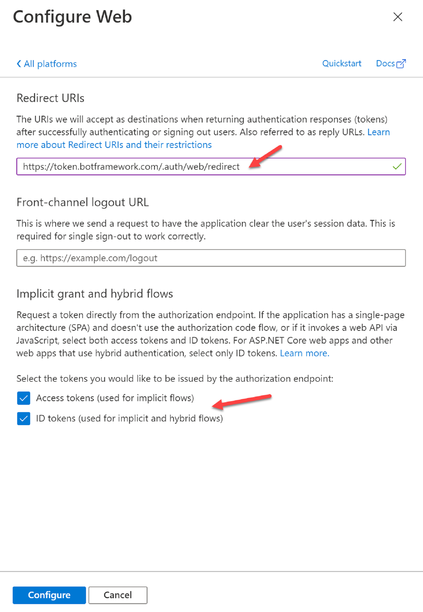
I know this was a lot, but we are almost there 😀
Luis side of things ⁉¶
You will need to set up a new app in LUIS and use it's info in the Bot Composer as we are using LUIS to interpret the intent of the bot. For e.g when you ask your bot a question it is a trigger phrase and this is then interpreted using LUIS to give back results.
- Go to LUIS https://www.luis.ai/
-
Make sure you have set up the authoring resource with your Azure subscription.

-
Create a new app under the this authoring resource

-
Copy the LUIS region and LUIS authoring key as below, you will need it later for Bot Composer settings.
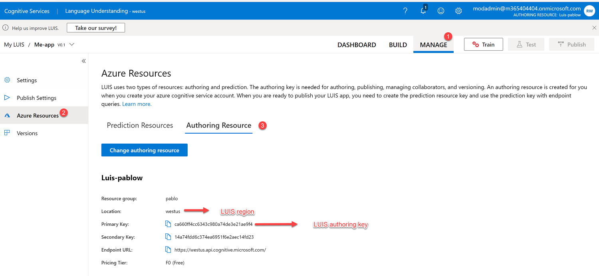
Seems like that was easy 👍
Graph connection side of things¶
Your bot needs to talk to Graph. In our SPFx webpart we had it easy with Microsoft Graph Toolkit component. Here, we have to set things up.
-
Go to the configuration page of the Bot Channel Registration, and select the Add OAuth Connection Settings button.

-
Fill out the connection settings as shown below, you will use the appId, secret and the tenantId you copied from the app registration you did earlier to fill this connection settings.
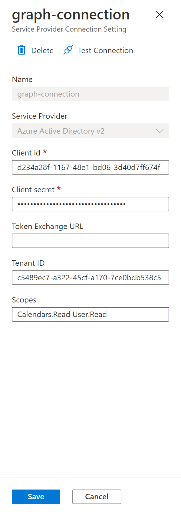
For now, our ME bot only reads user's calendar so under scope we can mention Calendars.Read, we can adjust the scope as we extend the bot to do more.
You can have all scopes in one connection (separated by space), or multiple connection with unique scopes incase you want to do dynamic consent.
Source code side of things¶
- Go to my source code https://github.com/rabwill/bot-me-experience and clone the project.
- Open this project's root folder
bot-me-experiencein Bot Composer (You will see an Open button on top) - Go to the settings of the Bot Composer.
- Fill in the appId, secret, LUIS authoring key and LUIS region as shown below. You had previously copied these.

Testing with Bot emulator¶
- The bot is configured to be tested locally.
-
Start the bot

-
Choose Test in emulator as shown below. Allow access if you get a security alert.

-
Type
My next meetingsin the chat in the emulator and hit send.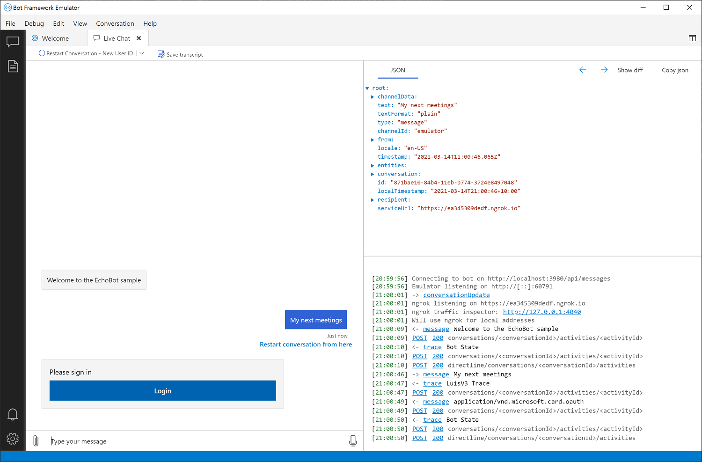
-
You will get the the Login button to give permission for the app to read your calendar.
- Select login, and complete the sign in process.
-
Once done you will see the meetings shown to you (make sure you have up coming meetings to test this)
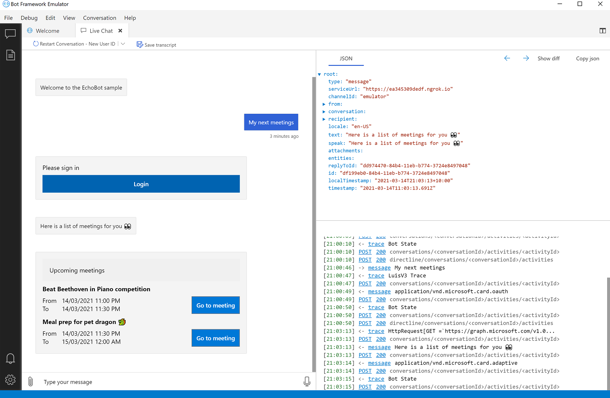
Your ME bot is working and it's magic. 😀🎉 Not a single line of code so far.
Testing ME bot in Microsoft Teams¶
Now the final part of our exercise is to get this up and running in Microsoft Teams.
-
Go to Microsoft Team's app studio and create a new app.
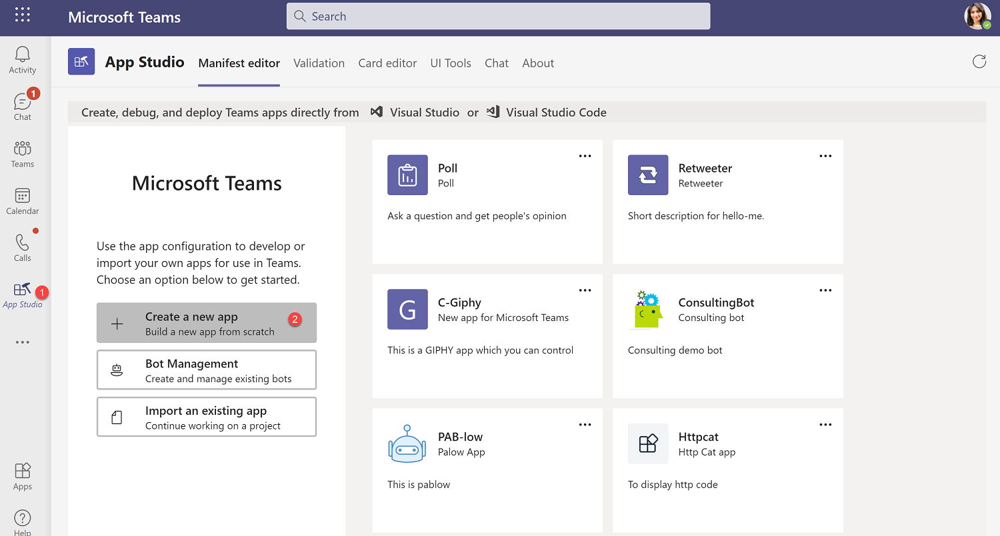
-
Fill out the App details (name of the app etc..)
-
Under Capabilities, select Bot, select Set up.

-
Select Existing bot and paste the appId used before here, and select scope Personal.
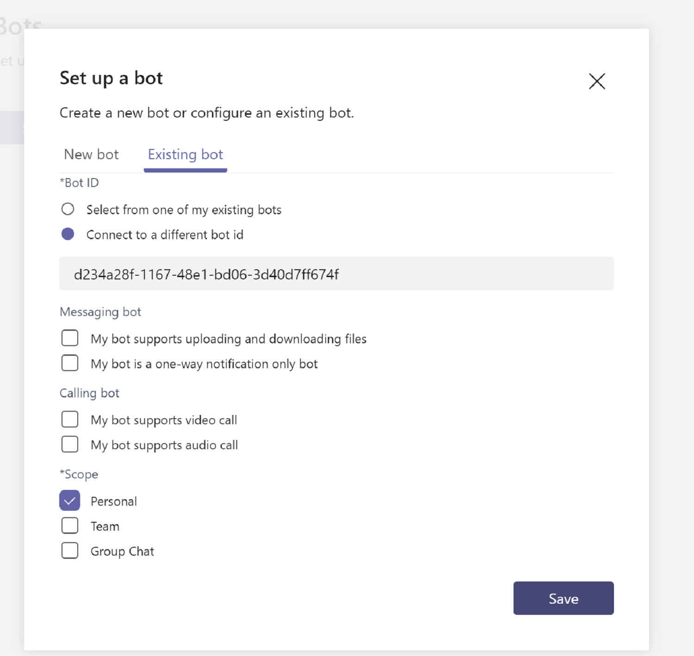
-
Under Finish, select Domains and permissions, add
token.botframework.comunder valid domains.
You have successfully created a Teams application for the ME bot 🐱👤. Let's test it.
- Make sure you have started the bot in the Bot Composer.
- Tunnel the localhost which you probably noticed is in port 3980. Use below script to ngrok.
ngrok http 3980
If you are using a purchased subdomain then use below script
ngrok http 3980 -subdomain <subdomain-name-here>
I have used a subdomain called cda.
If you don't have a subdomain, the url may look something like https://bb48526b33ca.ngrok.io
-
Make sure you copy the ngrok url and update it in the Bot channel registration page in Azure Portal.

-
Go to the app studio and under Finish, select Test and distribute.
- Install the app and you will be taken to a chat with the bot.
- The chat experience will be similar to what you experienced in Bot Emulator.
-
Here is how it will look.
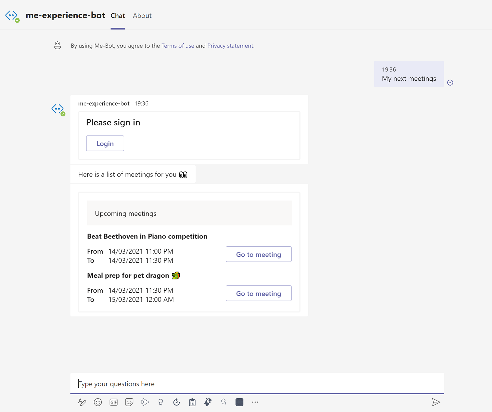
How did the magic work?¶
Open the project in the Bot Composer and go to the trigger MyMeetings.
Triggers fire when a particular trigger phrase matches the intent, here intent is MyMeetings.
When the user sent a message My next meetings in the chat, and the trigger gets fired.
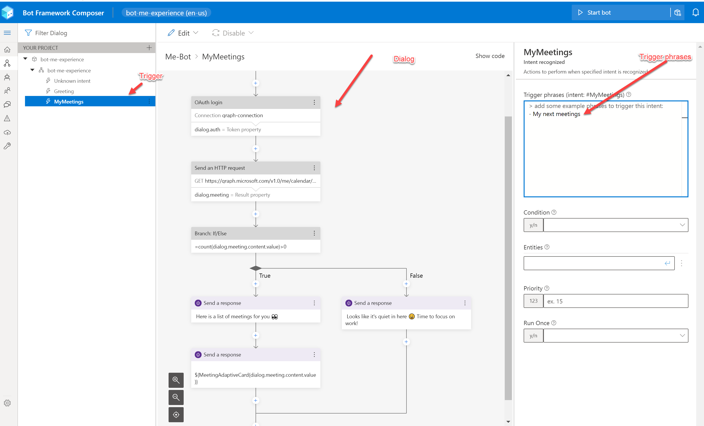
Each trigger has a dialog as shown below, this is where all the logic reside- the authentication using the OAuth connection we set up before, the graph API calls and responses from ME bot.
They are all built in actions, just like Power Automate.
We have used adaptive cards to send the bot response with the meeting information.

The adaptive card used to display the meetings, is in the Bot response of the Bot Composer.
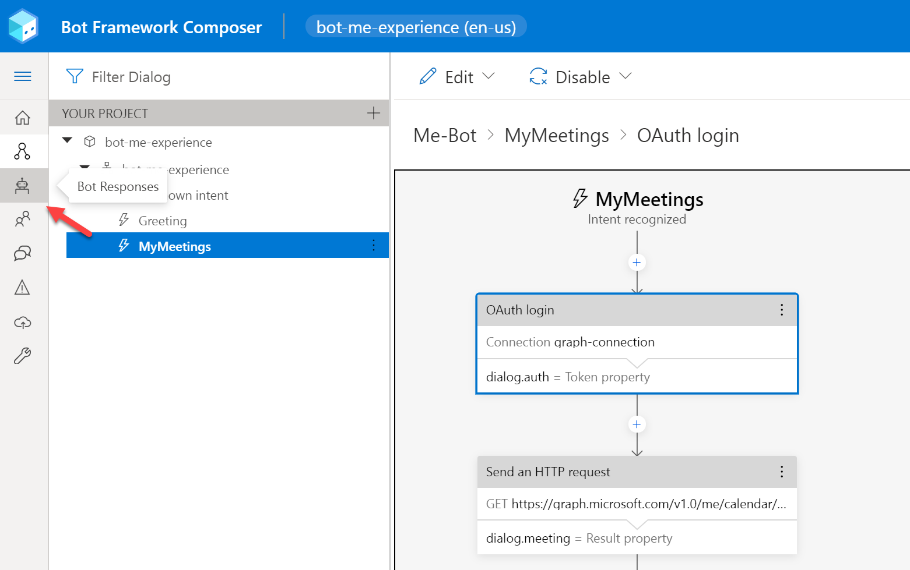
The show code feature is quite useful when you want to see the code behind it and make changes to the adaptive card.

Here you will see a function MeetingAdaptiveCard which takes parameter response coming from Graph API call, and generate the Adaptive card with the response data.
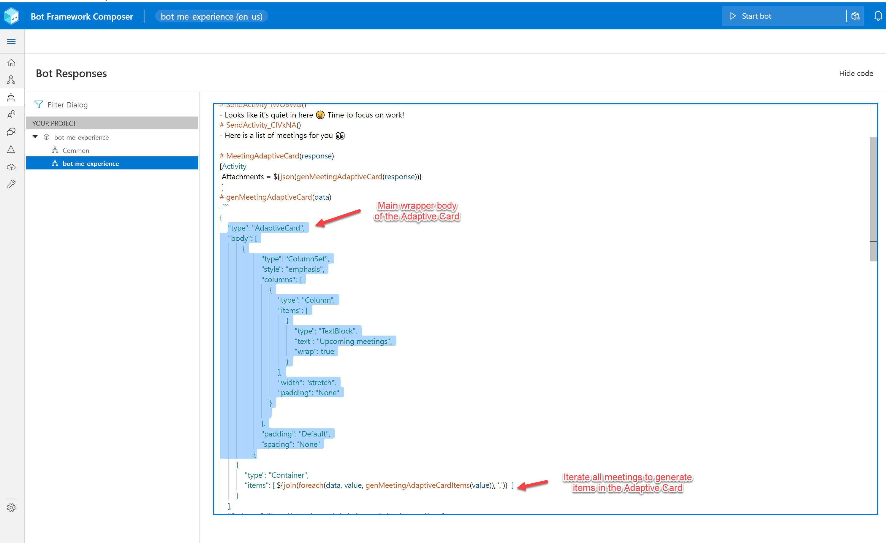
It is a bit tedious to write adaptive cards in an editor like this, hopefully it will get better and we will be able to see previews.
Conclusion¶
There is still a lot to improve in the Bot Composer but I can see a lot of potential in this tool. Many bot applications with simple and straight forward workflows can be easily built using this low code tool.
I hope I have at least put some curiosity in building bots in Microsoft Teams using the Bot Composer. There is so much more I'd like to cover, but let's stop for now. Building a bot within few hours is powerful. We can do so much more and not a single line of code was written by the developer. Watch this space to learn more about bots and Bot Composers. I will also add new capabilities to ME bot, so watch this space!
Till then take care 😊